A Controlled Study for Tabletop Bimanual Manipulation
Public Technical Report · June 2026 · Policy backbone: OpenPI π0.5
“More cameras” is not the design principle — task-relevant information density is. With large-FoV wrist cameras, a head view is an auxiliary signal, not a default requirement.
Multi-view perception is often treated as a safe design choice for robot manipulation: if one camera is useful, more cameras should be better. We revisit that assumption in tabletop bimanual manipulation by comparing policies trained with two large-field-of-view (FoV) wrist cameras against policies that additionally receive a head view, using controlled-variable experiments on a real bimanual platform.
Across three tabletop tasks, adding a head view does not consistently improve task completion or execution quality: when the wrist cameras already observe the objects, grippers, and goal regions, wrist-only policies form a strong baseline. Restricting the wrist-camera FoV increases the potential value of a head view, but performance improves most reliably when the added view supplies concentrated, task-relevant information: region-of-interest (ROI) cropping yields more consistent head-view gains than the uncropped image, which is dominated by background and task-irrelevant regions.
The data-scaling results further suggest an interaction between FoV and demonstration count: wide observations improve coverage but may require more data to stabilize, and they may reach a higher performance ceiling once enough demonstrations are available. These results suggest that camera design should be framed as a task-relevance and information-density problem rather than as a simple count of input views.
Four research questions, answered with controlled contrasts on a real bimanual platform.
Under large-FoV wrists, head-view contrasts are inconsistent: RawHead lowers mean FinalScore on Task A (−16.0) and Task B (−1.1); ROIHead helps on Task B (+21.0) and Task C (+12.2) but not Task A (−6.0).
ROIHead improves localization under every FoV setting, yet Δhead flips negative at medium FoVs (−5.3, −7.9) because longer trajectories violate the quality gate — while D435-like converts it into a +29.2 gain.
ROI-cropped head views beat raw head views on 5 of 6 task–FoV combinations. RawHead shows a characteristic pattern: tasks get completed, but with low quality success and longer trajectories.
Only the large-FoV wrist-only configuration crosses FinalScore 60 — and only at 800 demonstrations. Wide views may need more data to stabilize but suggest a higher ceiling.
Three tabletop tasks × six visual configurations, with the policy backbone, training recipe, and evaluation schedule held fixed.
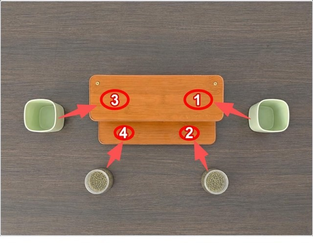
Sequentially grasp four objects and place them into assigned storage positions. Long-horizon, multi-stage; also used for the data-scaling study.
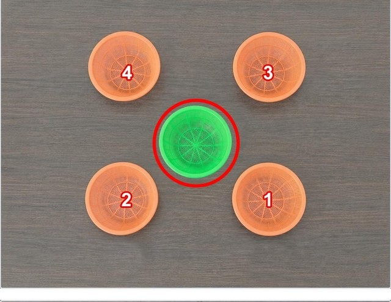
Nest four surrounding baskets into a central target basket with both arms. Stresses bimanual coordination and relative pose; used for the wrist-FoV scan.
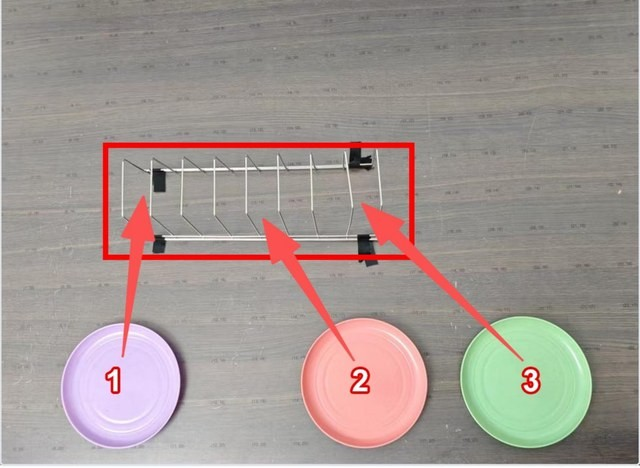
Grasp plates and insert them accurately into a rack. Sensitive to first localization, grasp stability, and final placement precision.
One representative real-robot rollout per task. Clips play automatically while in view; click a clip to pause or resume.
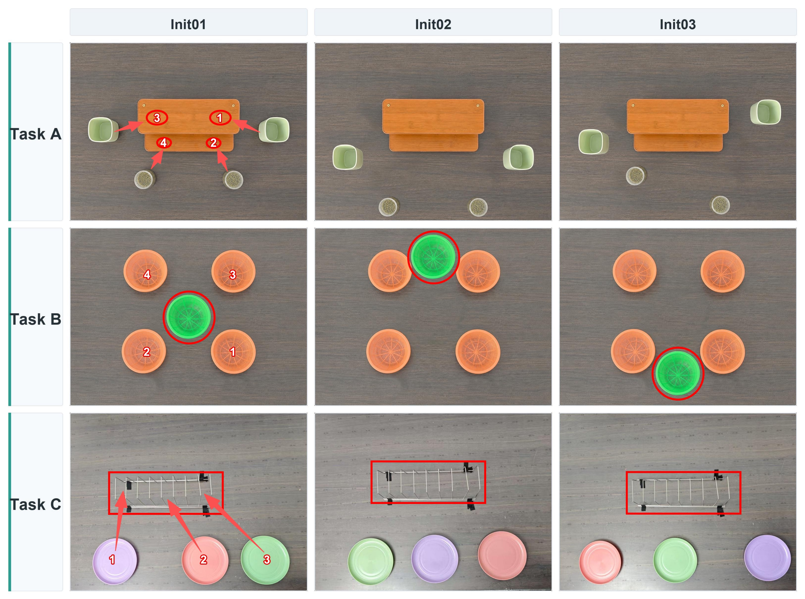
Initial layouts. Every task is evaluated under three fixed initial layouts (Init01–Init03) that relocate objects between rollouts, so no configuration can succeed by replaying one memorized trajectory.
Wrist-camera FoV (Large → D435-like crop) and head-view input form (none / raw / ROI-cropped).
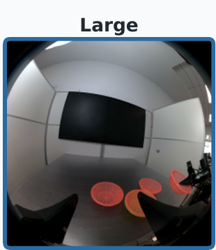
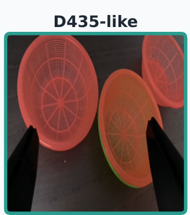
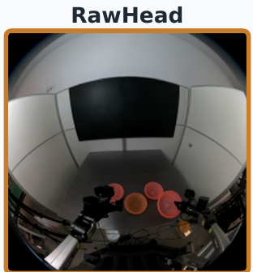
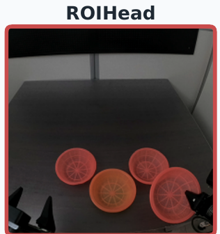
| ID | Wrist FoV | Head type | Input configuration | Purpose |
|---|---|---|---|---|
| G1 | Large | NoHead | Large wrist only | Large-FoV dual-wrist baseline |
| G2 | Large | RawHead | Large wrist + RawHead | Raw head view under large FoV |
| G3 | Large | ROIHead | Large wrist + ROIHead | ROI head view under large FoV |
| G4 | D435-like | NoHead | Cropped wrist only | Simulated restricted wrist vision |
| G5 | D435-like | RawHead | Cropped wrist + RawHead | Raw head view under small FoV |
| G6 | D435-like | ROIHead | Cropped wrist + ROIHead | ROI head view under small FoV |
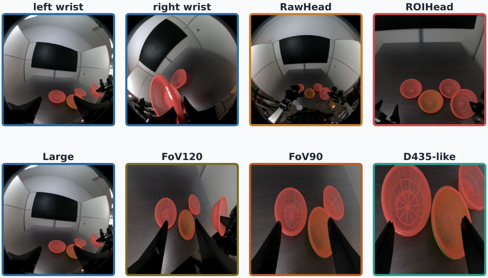
Representative policy inputs. Top: left-wrist, right-wrist, RawHead, and ROIHead views. Bottom: left-wrist inputs under the four FoV settings. What matters to the policy is the proportion of targets, grippers, and goal regions in each image — not the number of cameras.
All charts are redrawn from the report's per-rollout scoring records. Hover over any mark for the underlying values.
Quality-adjusted score (higher is better)
FinalScore = ½·outcome + 50·(high-quality indicator). In the FinalScore view each bar is split into the outcome contribution (solid) and the high-quality bonus (light top segment); the two sum to FinalScore. Bars with no light segment complete rollouts without earning any high-quality bonus — see Task A: G2 completes more often than G1 (90% vs. 50%) yet earns zero bonus, so it scores lower. Completion counts coarse task success; Quality counts strict high-quality completions; Steps are low-level control steps (lower is better).
| Task | Config | Wrist FoV | Head | Completion | FinalScore | Score split | Quality success | Steps |
|---|---|---|---|---|---|---|---|---|
| A | G1 | Large | NoHead | 50% | 65.2 | 45.2 + 20.0 | 40% | 975.0 |
| A | G2 | Large | RawHead | 90% | 49.2 | 49.2 + 0.0 | 0% | 1045.0 |
| A | G3 | Large | ROIHead | 80% | 59.2 | 49.2 + 10.0 | 20% | 1050.0 |
| A | G4 | D435-like | NoHead | 60% | 47.3 | 42.3 + 5.0 | 10% | 1200.0 |
| A | G5 | D435-like | RawHead | 70% | 45.1 | 45.1 + 0.0 | 0% | 1500.0 |
| A | G6 | D435-like | ROIHead | 30% | 44.1 | 44.1 + 0.0 | 0% | 1165.0 |
| B | G1 | Large | NoHead | 60% | 68.2 | 43.2 + 25.0 | 50% | 837.5 |
| B | G2 | Large | RawHead | 50% | 67.2 | 47.2 + 20.0 | 40% | 905.0 |
| B | G3 | Large | ROIHead | 80% | 89.2 | 49.2 + 40.0 | 80% | 790.0 |
| B | G4 | D435-like | NoHead | 20% | 42.2 | 37.2 + 5.0 | 10% | 945.0 |
| B | G5 | D435-like | RawHead | 30% | 57.5 | 42.5 + 15.0 | 30% | 947.5 |
| B | G6 | D435-like | ROIHead | 50% | 71.4 | 46.4 + 25.0 | 50% | 907.5 |
| C | G1 | Large | NoHead | 80% | 77.8 | 47.8 + 30.0 | 60% | 1100.0 |
| C | G2 | Large | RawHead | 80% | 77.8 | 47.8 + 30.0 | 60% | 1095.0 |
| C | G3 | Large | ROIHead | 100% | 90.0 | 50.0 + 40.0 | 80% | 1040.0 |
| C | G4 | D435-like | NoHead | 0% | 28.0 | 28.0 + 0.0 | 0% | 1365.0 |
| C | G5 | D435-like | RawHead | 0% | 36.9 | 36.9 + 0.0 | 0% | 1260.0 |
| C | G6 | D435-like | ROIHead | 90% | 58.3 | 48.3 + 10.0 | 20% | 1240.0 |
The cross-task pattern: large-FoV columns (G1–G3) stay strong; D435-like columns (G4–G6) recover only when a concentrated ROI head view is added.
ΔFinalScore of adding a head view to the G1 wrist-only baseline (G2−G1 and G3−G1). No consistent direction across tasks — the head view is a task-dependent auxiliary signal, not a default requirement.
Restricting wrist FoV should raise the value of a head view — but Δhead is non-monotonic. Panel (b) explains why: localization improves under every FoV, while the quality-success change flips sign exactly at the medium settings, where longer ROIHead trajectories violate the T ≤ 900 quality gate.
The slim gray ranges behind the bars in (a) are descriptive bootstrap intervals over fixed rollout slots, not significance tests. Large FoV: a complementary global-layout cue (+21.0). D435-like: compensation for missing wrist evidence (+29.2). FoV120/FoV90: opportunity without conversion — localization gains fail to clear the quality gate.
Under a fixed 60k-step optimization budget with nested subsets, only the large-FoV wrist-only configuration crosses the FinalScore-60 threshold — and only at 800 demonstrations. Wide views appear to need more data to stabilize but suggest a higher ceiling.
The slim vertical ranges at each measured point are descriptive bootstrap intervals — intervals exist only at 50/200/800 demonstrations, so no continuous band is drawn. The 2W-D435Crop point at 200 demonstrations is a non-monotonic outlier consistent with high variance under the fixed evaluation schedule — the trend is not presented as a strict scaling law.
Why the head view behaves this way: input form, completion-vs-quality, and where each view actually matters.
Each point is one task–configuration pair. RawHead configurations (orange, dark ring) often keep a decent completion rate while collapsing in quality success — the task finishes, but slowly, unstably, or with retries.
Form beats presence. RawHead and ROIHead come from the same physical camera — only the input form differs. ROI cropping concentrates targets and goal regions in the image, and wins on 5 of 6 task–FoV combinations (up to +22.1 FinalScore on Task B). A wider view is not more information for the policy; it is often more background.
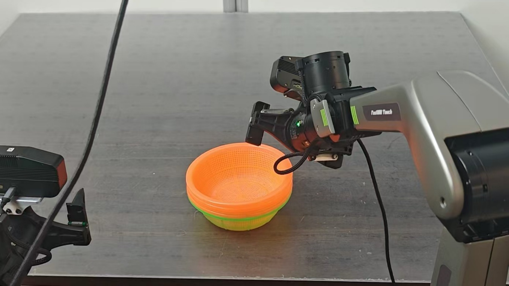
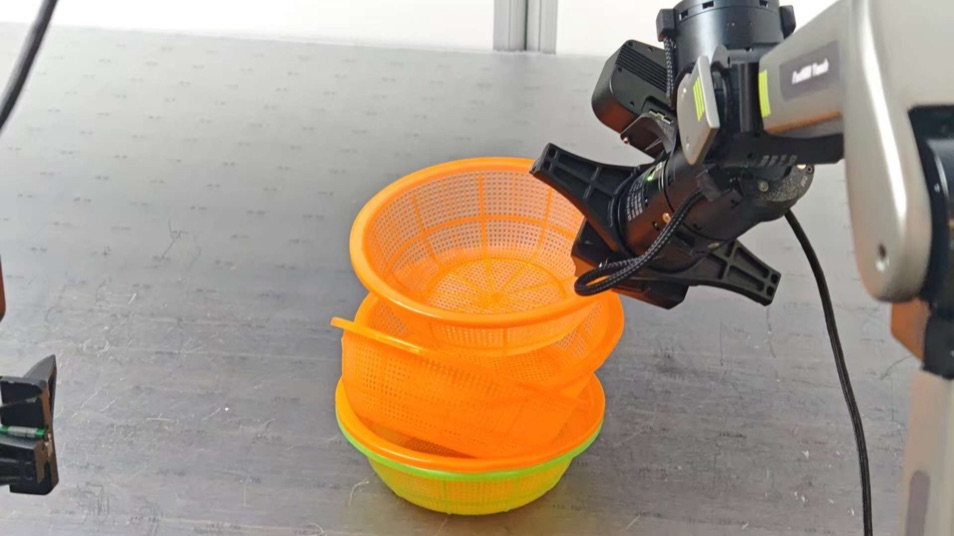
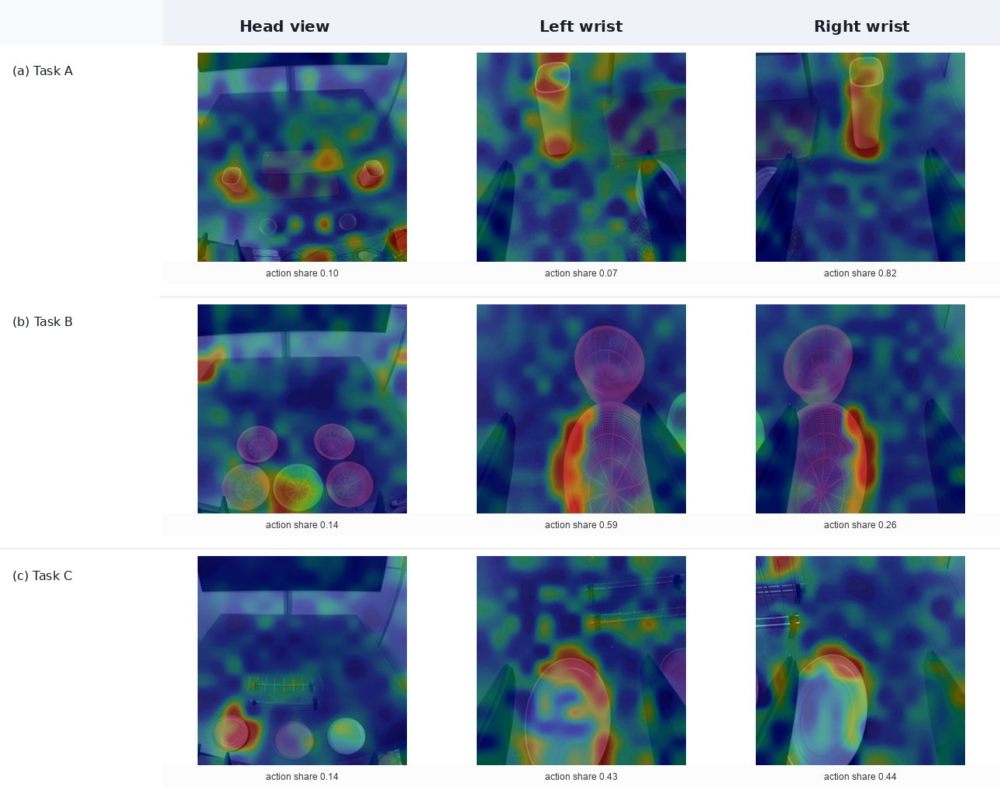
Who does what. RISE-style action-sensitivity maps: wrist views respond around grippers, objects, and contact boundaries (local control); the head view responds around containers and placement regions with a small share (qv ≈ 0.10–0.14) — coarse localization context, not contact control. Diagnostic illustrations, not success evidence.
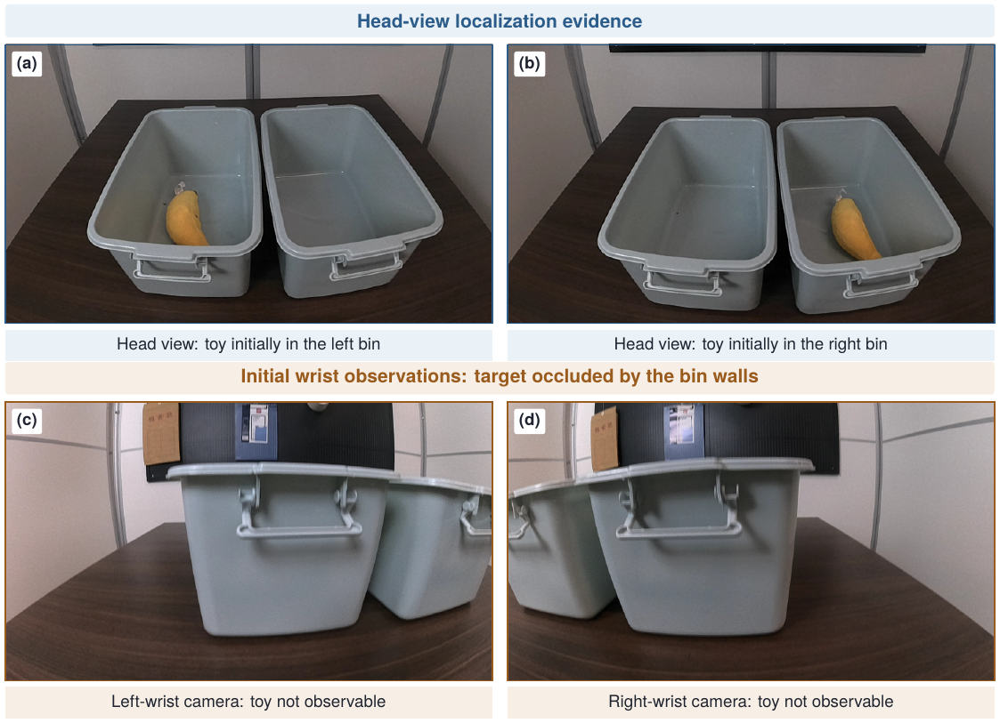
The boundary case. In the supplementary toy-transfer diagnostic the target starts hidden inside a bin: the head view distinguishes left vs. right, while both wrist views face the bin walls. When wrist views structurally cannot see the target, a head view becomes a genuine localization signal.
Unedited evaluation episodes, shown as the policy actually sees them. Every clip is the raw three-stream observation the network receives — two wrist cameras and the head camera — so the scoring decisions below can be checked against the recording.
Clips are muted and played at 3×–4× so a full episode fits in roughly half a minute; the playback rate is printed on each clip. They are selected illustrations of the outcome categories in the scoring protocol, not a complete record of every rollout, and single episodes should not be read as configuration-level evidence — the aggregate numbers in the Results section carry that role.
Scope. These conclusions are for tabletop bimanual manipulation with UMI-style large-FoV wrist cameras, small fixed evaluation sets, and descriptive uncertainty. They should not be extended to mobile manipulation or scene-level tasks, where navigation, long-range search, and re-localization can make exocentric views essential. The D435-like condition is a crop-based simulation of restricted FoV, not a claim about specific hardware.
@techreport{anonymous2026headview,
title = {Assessing the Marginal Utility of Exocentric Head Views in
UMI-Style Large-FoV Wrist-Camera Manipulation:
A Controlled Study for Tabletop Bimanual Manipulation},
author = {Anonymous Author(s)},
year = {2026},
month = {June},
note = {Public technical report}
}